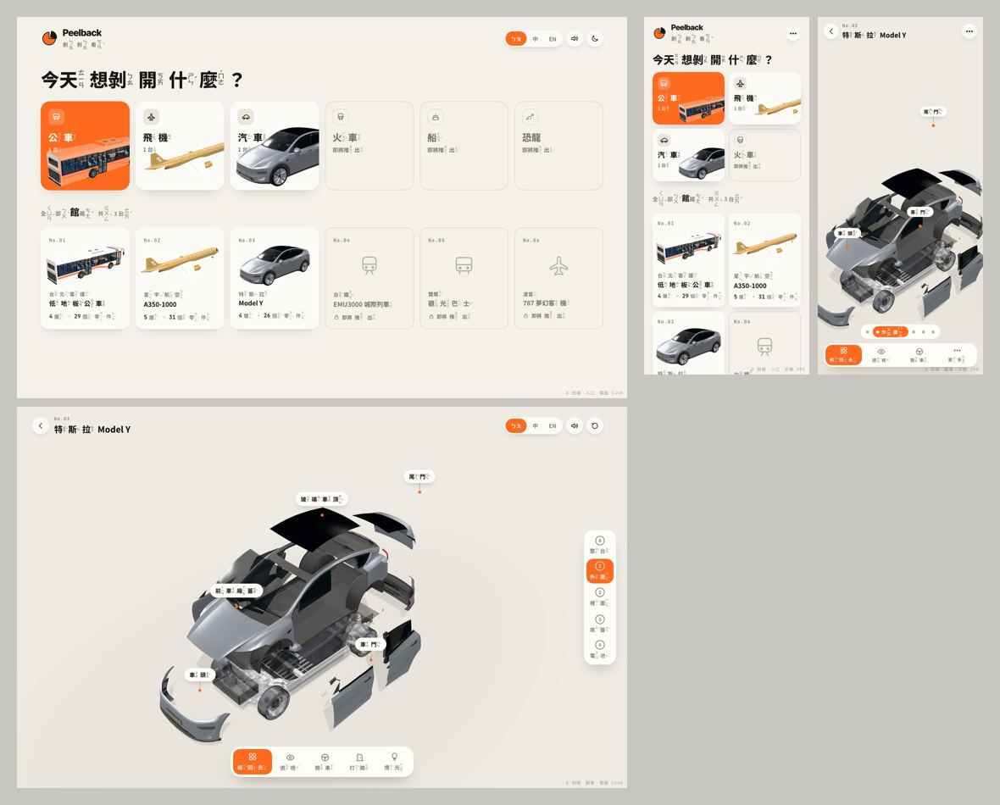

決策 01
產品要長什麼樣子
- 情境
- 同一套拆解功能，可以包成很多種產品的臉。這決定了小朋友第一眼覺得這是玩具、課本，還是一個展覽。
- 選項
- 三個方向，各做電腦、手機首頁和看車頁的效果圖並排比較：A 藍圖 B 剝橘 C 展廳

A 藍圖：深色、工程圖感 
B 剝橘：紙色、格子清單 
C 展廳：一次一台，像展台 - 決定
- 選 C：一次只放一台在畫面中間，像走進展覽看一件展品。但 C 的按鈕是分開的圓鈕、選中只有一圈細框，不夠明顯；改成相關的按鈕收在同一個霧面膠囊裡，選中的用薄荷綠實心填滿。
- 結果
- 整站只有一種按鈕語言。線框只留給「還沒推出」這種不能按的東西。